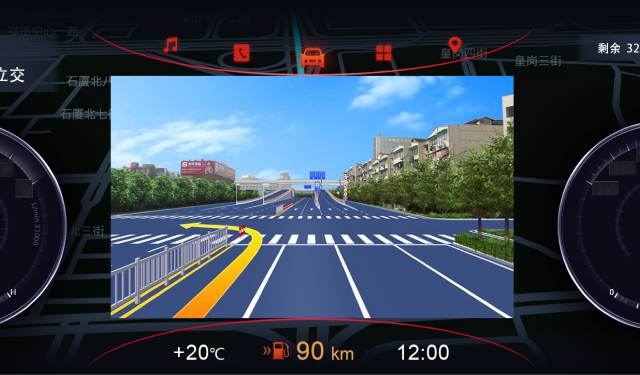

- 导航产品形态
- 专属应用领域
传统导航
- 提供系统推荐、高速优先、躲避拥堵等多种路线规划服务。
- 时路况信息，交通状况一目了然。
- 安全提示：包括限速、限行、转弯、上下陡坡等安全提示。
- 在复杂路口和易出错路口建立实景路口图，给用户在岔路口进行直观引导。
高精度导航
- 显示三维高清实景城市、立体道路、车道等信息。
- 车道切换提醒更精准，实景高清诱导，道路空间关系更清晰。
- 基于车道级路线规划、路况提醒、躲避拥堵。
手机导航
- 多种路线模式选择：包括步行、骑行、公交、车辆导航等多种导航模式。
- 语音诱导：包括直行、左右转弯、掉头、电子眼、限速、限行等安全提示。
- 路口实景图：在复杂路口和易出错路口建立实景路口图，给用户在岔路口进行直观引导。
- K友结伴游：同路K友结伴游，可创建车队和加入车队，支持实时语音对讲。
停车场导航
- 显示停车场室内地图，包括楼层、停车位、电梯、楼梯、出入口、室内道路等信息。
- 可选择具体车位为目的地规划路线并导航至目标车位。
- 用户可通过反向寻车功能快速查找车辆所在位置，并通过步行诱导至停车位。

仪表盘导航
- UI适配：可适配不同分辨率仪表盘。
- 语音诱导：包括直行、左右转弯、掉头、电子眼、限速、限行等安全提示。
- 路口实景图：在复杂路口和易出错路口建立实景路口图，给用户在岔路口进行直观引导。
- K友结伴游：同路K友结伴游，可创建车队和加入车队，支持实时语音对讲。
AR导航
- 影像融合：支持将传感器提供的车道信息和高精度地图数据相结合，在影像上投射转弯、直行，掉头、切车道等诱导信息的导航方式。
- 精准诱导：车道级诱导，智能感知周边环境。
乘用车导航
- 面向小汽车用户，以驾驶安全为核心，符合驾驶位视角和驾车操作习惯，导航流程极简易操作。
- 根据实时路况为用户避开拥堵路段。
- 智能巡航：无路线时，全新智能巡航模式，动态车速、电子眼、当前路名、路况播报。
货车导航
- 货车POI数据专项采集，突出货车导航专题数据，全国范围覆盖。
- 避开禁行、限行，高架、窄路等路段，减少大车掉头或不适宜通行的道路。
- 货车电子眼提醒、窄小道路提醒等驾驶安全提醒。
- 连接物流企业、货主，实时监控管理车辆，上传位置信息和行驶轨迹，配合企业调度。
- 动态提醒货车行驶路线上的限行和限时限行路段，实时规划躲避限行的路径。
新能源汽车导航
- 综合算路：新能源综合算路规划，计算合理的节省电量的路线，计算合理的充电经由地路线。
- 智能寻桩：获取可达里程，充电桩动态，及交通动态信息，智能选择充电桩。
- 专题数据：定制新能源专题数据，提升充电站的显示层级，专属的地图表达。
- 服务闭环：新能源一站式智能出行服务闭环，充电地图、网点搜寻、预约下单、在线支付、车辆监控及用户运营等。
特种车导航
- 北斗定位：使用北斗定位系统与特有的短报文通讯，安全性高。
- 离线地图：离线加载中国全境地图，地图数据支持外置SD卡存储。
- 实时监控：车辆位置实时监控，指挥中心可实时查看车辆所在位置与行车轨迹。
- 专属路线：支持多点路线规划，路线由指挥中心规划及下发，支持分段下发。
泥头车导航
- 偏移路线提醒：行车途中车辆偏移规划路线行驶时会实时提醒司机偏离规划的行驶路线，并引导行驶回规划路线。
- 隐患点提醒：泥头车企业可在通行路线上自行标注事故隐患点，司机行车过程中系统会语音播报提醒，如盲区、上下陡坡、急弯等。
- 通行路线查询：泥头车司机可在地图上查看通行证路线。
- 专属路线规划：可通过泥头车施工合同点、渣土受纳场、停车场等POI规划专属路线。
智能穿戴设备
- 多种路线模式选择：包括步行、骑行、公交、车辆导航等多种导航模式。
- 语音诱导：解放双眼，行车更安全。
- K友结伴游：同路K友结伴游，可创建车队和加入车队，支持实时语音对讲。